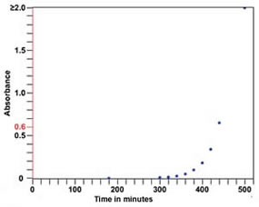
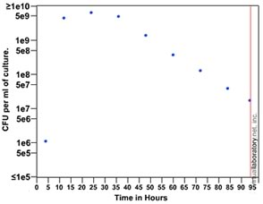
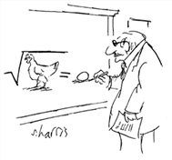

Modeling populations (optional) |
| At this point, we have a made a number of observations, and collected lots of data, but what do we really know about the behavior of E. coli? Using the vSpec we determined that total bacterial mass accumulated rapidly after the the innoculation of the culture. During this "exponential" growth phase, we might expect that bacterial cells grow and divide at their maximal rate. You determined that the doubling time was ~20 minutes (at 37ºC). |
By the end of our experiment,
the number of viable organisms had decreased by ~99% from its peak. These
observations imply that both cell division and cell death must occur
within the system. |
 |
 |
Are some cells dying while other are dividing during the exponential growth phase? As the population declines, are some cells still dividing? Do we know how growth and death rates change as the conditions in the culture change? Is the reproductive rate of E. coli a function of population density, are their specific nutrients that limit growth? Do cells secrete substances that regulate how fast their neighbors divide or can they actively kill their neighbors, and so secure a greater share of the available nutrients for its own use? Will cell's that can kill their neighbors have a selective advantage over the long run? |
| |
Mathematics: a way to approach complex questions. If there is one subject that scares the average student more than science it is mathematics. Most people are highly adverse to math, one might even all them mathophobic. It has been estimated that two-thirds of American adults loathe and fear mathematics – no wonder most are mathematically illiterate. |
 |
| And yet, mathematical methods are essential to an accurate understanding of complex systems. Why is that? Because through mathematics, we can rigorous define the variables we think are responsible for the behavior of the system. This enable us to make highly quantitative predictions. If these predictions are confirmed, it is reasonable that we become more confident that we have identified the important factors involved in the behavior of the system. If our model does not accurately predict the behavior of the system, then clearly something is amiss – we may have not taken some important factor into account or our basic assumptions may be incorrect. Sometimes a model can seem correct at one level of measurement, but breaks down as the accuracy of measurements increased. This was the case with the Newtonian theory of gravity. Einstein's theory of gravity (general relativity) made more accurate predictions, and so lead to a deeper understanding of the nature of gravitational interactions. |
Use Wikipedia |
revised 19 March 2005 |